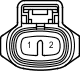

| Наименование | Выключатель света заднего хода в сборе |
| Код | C41 |
| Каталожный номер | 90980-11250 |
| Цвет | Серый |
| Технические характеристики |
|  |
| Расположение | |
|
Расположение деталей в моторном отсеке (для моделей с левосторонним рулевым управлением и 1KD-FTV) 3
|
|
| Система | |